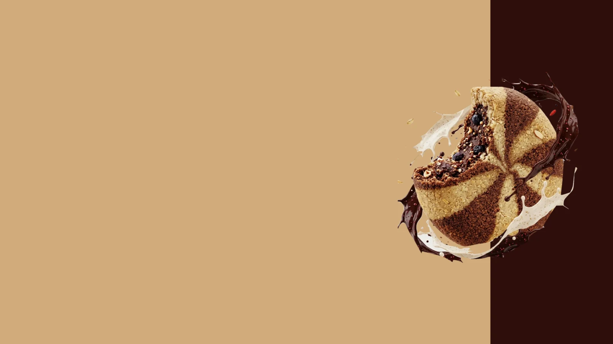
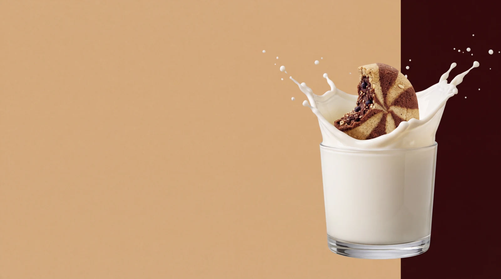
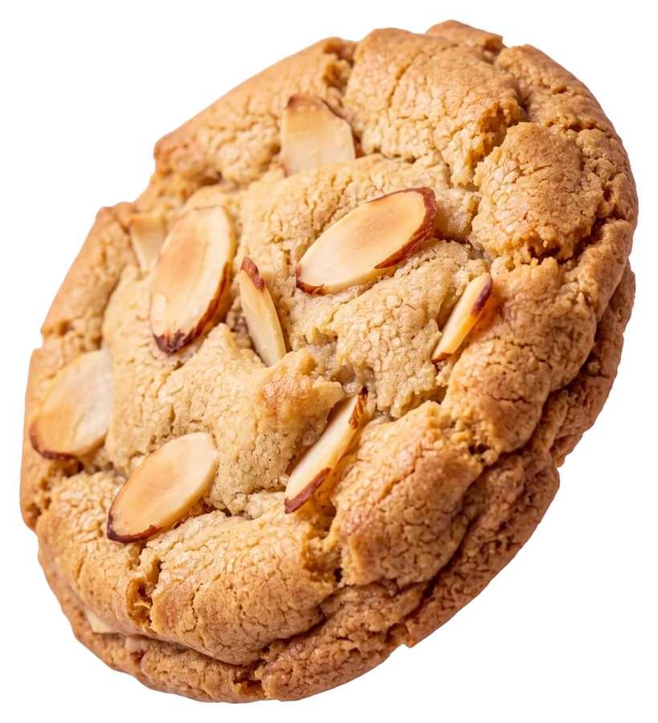
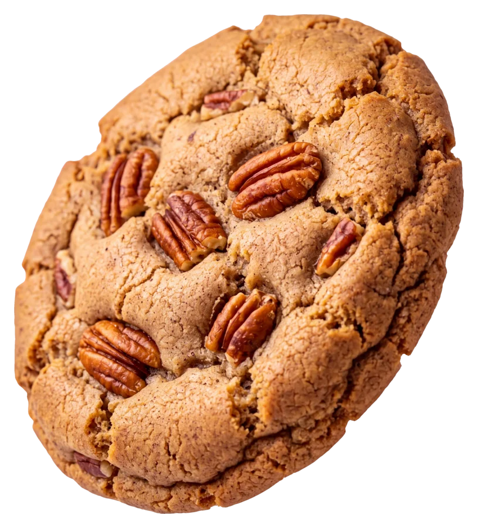
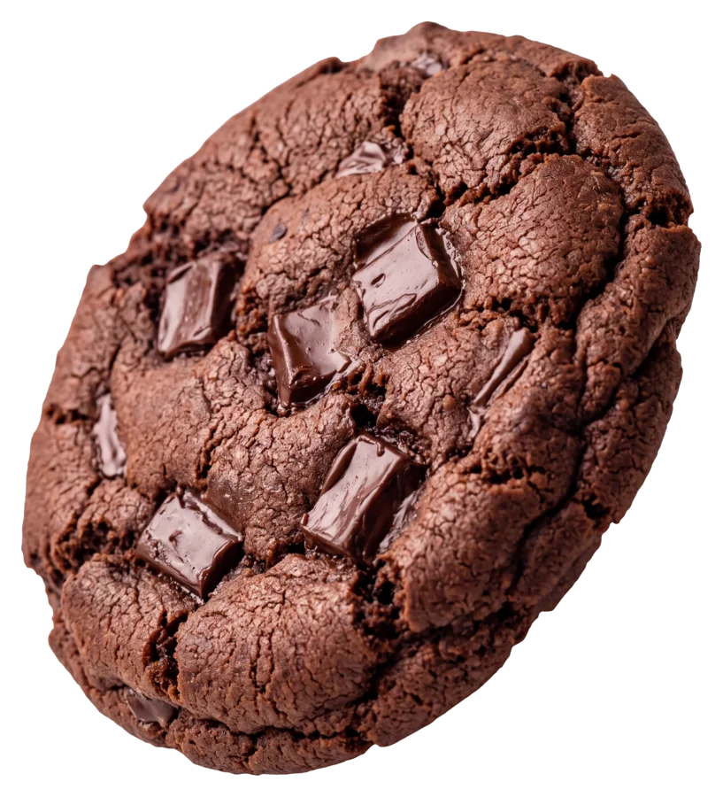
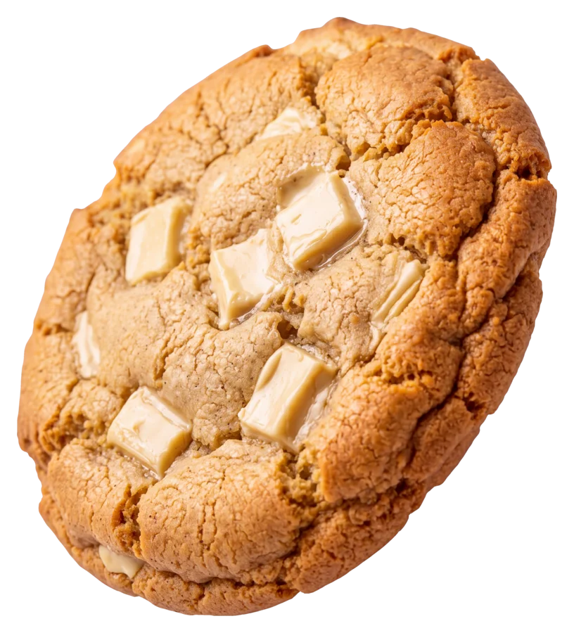
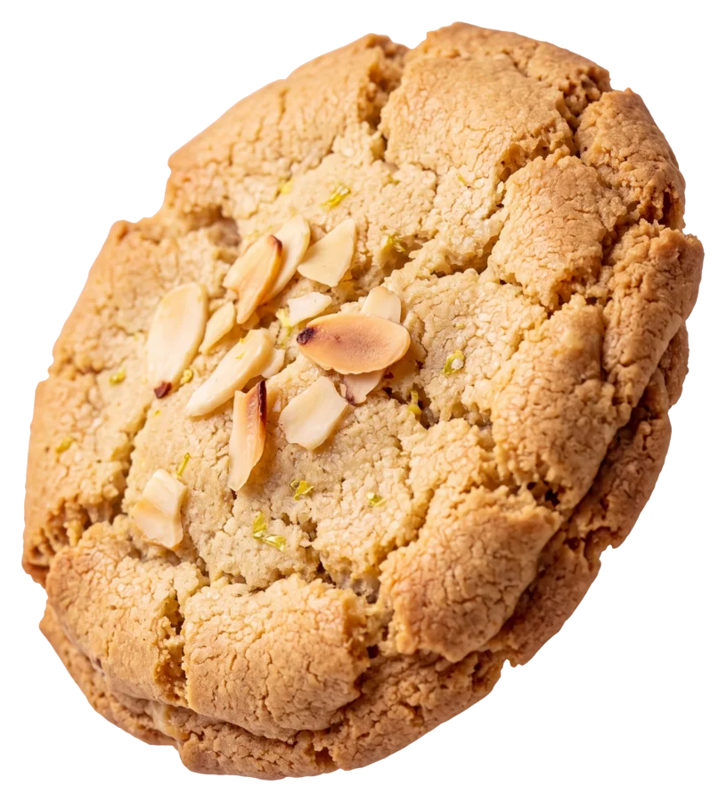
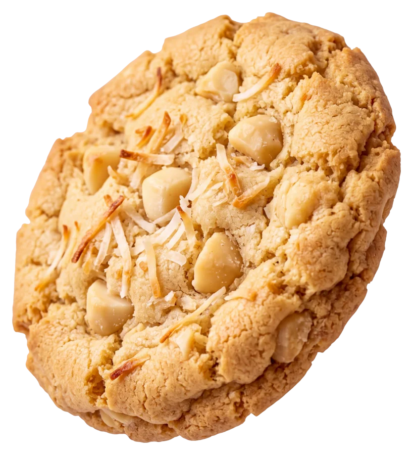
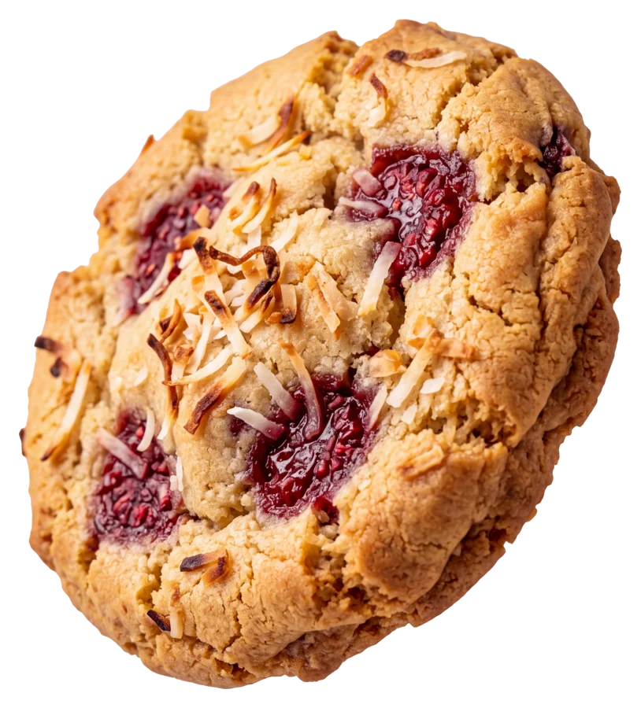
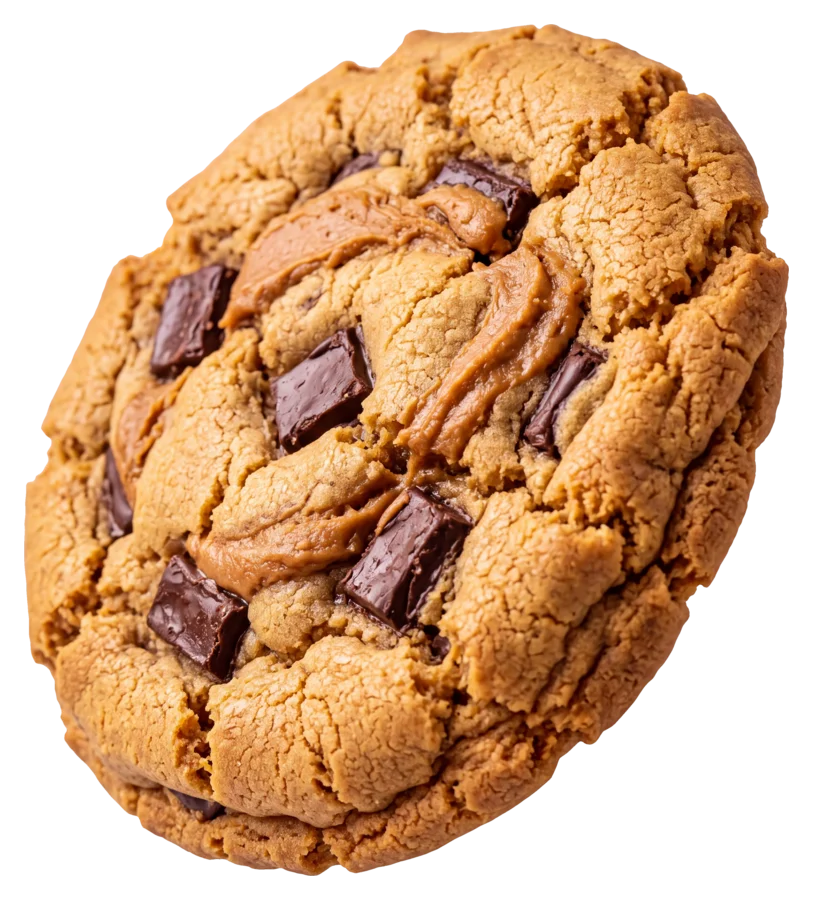

GUILT FREE COOKIE / STORYBOARD REVIEW / 12 OCTOBER 2026
One drop. A milk splash. Eight flavours.
Approved storyboard. The six-second video is now ready to review. The website headline and buttons remain live HTML; they are intentionally absent from these image plates.
01 — Hold the hero
Your original hero artwork, composed on the requested 80% tan / 20% chocolate split. The glass enters only after scrolling begins.

Exact existing artwork, composed in the Higgsfield processing sandbox. Desktop framing study, not a screenshot of the current website. Click for the original.
02 — The impact
The cookie meets the milk. This frame establishes the glass, splash and lighting; it is an AI-generated interpretation to review for continuity.

Higgsfield Nano Banana 2.1 · 4K generation setting, actual output 5504×3072 · 3 credits. Opaque storyboard image; transparency has not been prepared. Click for the original.
Before production: match the generated background texture and colour to the flat CSS split, move the glass anchor onto the boundary, normalise framing and preserve safe margins around droplets.
Then — eight real product assets
Claude will animate these existing transparent cutouts outward at peak splash, then settle them into product slots. These previews show the selected flavours, not the final choreography.

Toasted Almond & VanillaDiabetic friendly — proposed

Cinnamon PecanDiabetic friendly — proposed

Double Chocolate ChunkHigh protein — proposed

Vanilla White ChocolateHigh protein — proposed

Lemon AlmondGluten free — proposed

Coconut MacadamiaGluten free — proposed

Raspberry CoconutVegan — proposed

Peanut Chocolate RippleVegan — proposed
Product ingredients and dietary categories are proposals pending recipe verification. Prices and nutrition remain unset.
Production handoff
These are creative storyboard beats, not yet a matched start/end pair ready for interpolation. The video start frame still needs the same glass as the impact frame, with milk at rest and the cookie suspended above it. The hero-to-video handoff must account for the original decorative ribbons and any change in scale.
The approved impact direction has now been animated using separately prepared matched frames. Open the video review. Application integration remains separate.
Claude production brief · Asset paths and scroll plan